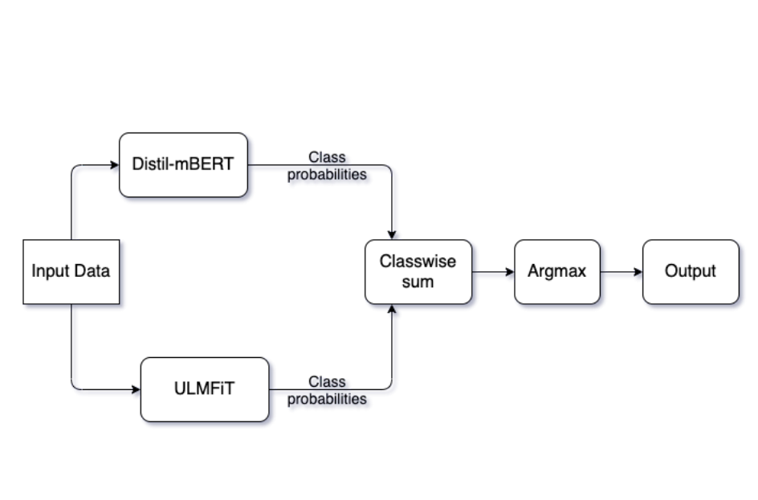

|
I'm a Pre-doctoral Researcher at Google Research, India where I am working towards improving image understanding, under the guidance of Dr. Gaurav Aggarwal and Dr. Sujoy Paul . I am broadly interested in multi-modal learning, and excited about domain adaptation and few shot learning. I'm a B.Tech Computer Science graduate from IIIT-Sri City. Before joining Google, I worked as a Machine Learning Engineer at Tata Consultancy Services (TCS), Hyderabad where I worked on building ML models with AutoML toolkits for output explainability. I interned for a semester at LimeChat as an AI software developer, where I was involved in designing contextual chatbots using Level 3 AI. In the summer of 2020, I worked on unsupervised segmentation of fish in challenging underwater scenarios under the guidance of Dr. Brejesh Lall at IIT, Delhi. In my sophomore year, I got an opportunity to explore a little bioinformatics by working on the problem of prediction of secondary structure of RNA, under the guidance of Dr. S. Satapathy at Tezpur University. I was the Intel AI Student Ambassador for my institute. As a student ambassador, I assisted juniors with carrying out AI projects involving Intel's AI toolkits, and conducted sessions for the same. I also worked on a project which involved reducing the frame rate in videos followed by frame reconstruction for efficient (internet) data usage.
When I'm not in front of a computer screen, I am mostly playing my guitar and singing. I am also
an avid table tennis player and enjoy reading books during leisure.
Here is my CV [Updated Sept 2023].
Email:
|

|
|

|
Debapriya Tula, Prathyush Potluri, Shreyas MS, Sumanth Doddapaneni, Pranjal Sahu, Rohan Sukumaran, Parth Patwa. Proceedings of the 1st Workshop on Speech and Language Technologies for Dravidian Languages EACL 2021. [Paper] [Code] European Chapter of the Association for Computational Linguistics (EACL) Workshop, 2021. We use a soft voting ensemble of multilingual models, viz. Distil-mBERT and ULMFiT for this shared task hosted in EACL 2021. Our solution ranked 1st for the Malayalam dataset and ranked 4th and 5th for Tamil and Kannada, respectively. |
|
|
Sen P., Tula D., Ray S.K., Satapathy S.S.. [Paper] [Code] International Conference on Computer Communication and Internet of Things (ICCCIoT 2020). We try to predict the most stable secondary structure(s) of an RNA sequence using concepts from Graph Theory to maximise base pairs, leading to minimum entropy structures. Awarded the best paper at ICCCIoT, 2020. |
|
|
Tula, Debapriya, Shreyas Ms, Viswanatha Reddy, Pranjal Sahu, Sumanth Doddapaneni, Prathyush Potluri, Rohan Sukumaran and Parth Patwa. [Paper] [Code] SN Computer Science (Journal), 2022. We introduce a novel code-mixing index (CMI) based focal loss which circumvents code-mixing in languages and class imbalance for the task of offence detection in Dravidian languages. |
|
|
Suvendra K Ray, Ruksana Aziz, Piyali Sen, Pratyush Kumar Beura, Saurav Das, Debapriya Tula, Madhusmita Dash, Nima Dondu Namsa, Ramesh Chandra Deka, Edward J Feil, Siddhartha Sankar Satapathy. [Paper] [Code] DNA Research (Journal), 2022. |
ExperienceAug 2022 - Present
Predoctoral Researcher
Aug 2021 - July 2022
Machine Learning Engineer
Jan 2021 - June 2021
NLP Software Development Intern
May 2020 - July 2020
Computer Vision Research Intern
May 2019 - June 2019
Research Intern
|
Teaching Experience
|
Projects
|
|
This website template is from Jon Barron. |